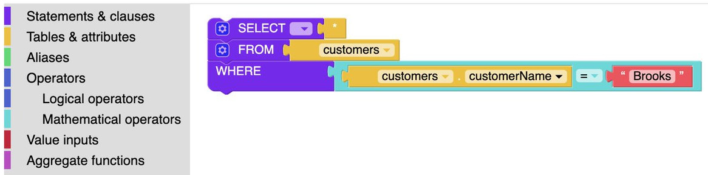
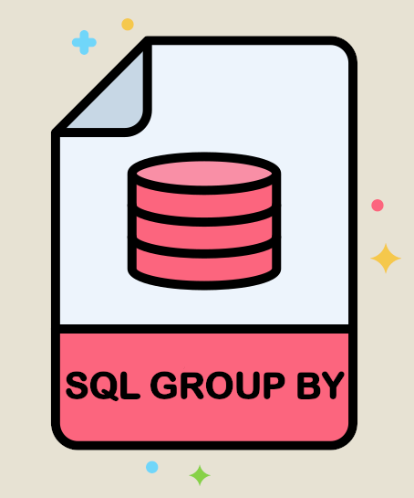
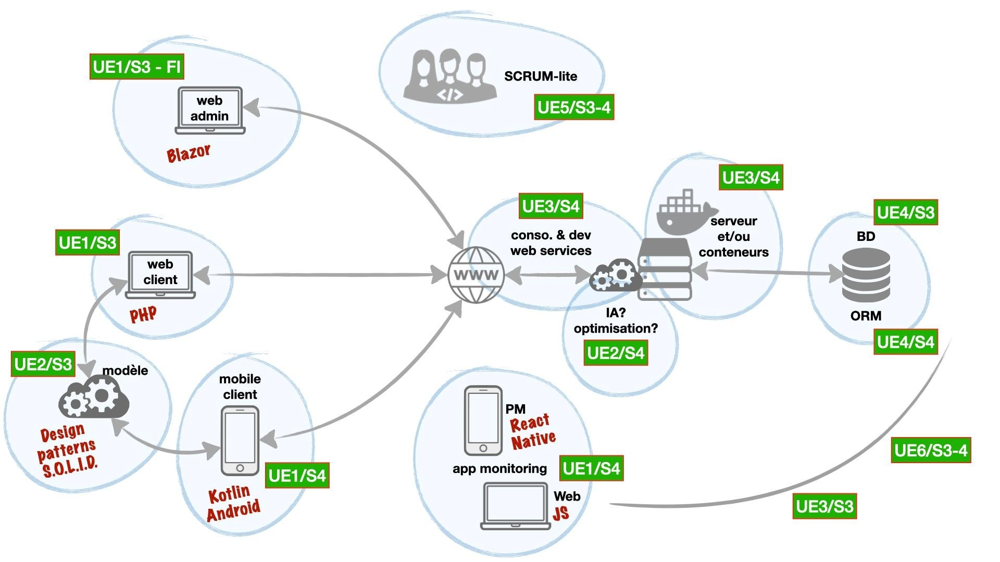
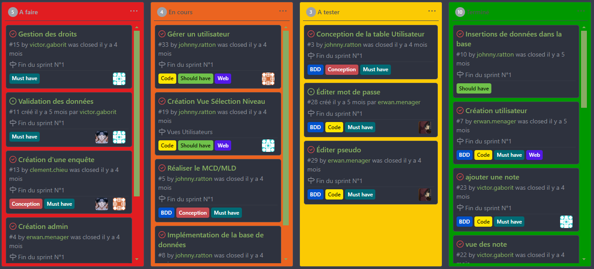

SQLuedo - Projet BUT 2ème année

Le jeu consiste à résoudre des enquêtes policières en cherchant dans une base de données. Pour cela, l'utilisateur doit rassembler différentes informations pour réaliser des requêtes SQL. Un mode plus accessible aux débutants est disponible où le concept des blocs de Scratch est implémenté.

Si l'utilisateur n'arrive pas à obtenir ce qu'il souhaite, des leçons sont mises à sa disposition afin de lui expliquer les différents thèmes abordés (SELECT DISTINCT, GROUP BY...). En fait, nous souhaitons rendre SQLuedo utilisable par les adeptes du SQL mais également faire découvrir ce langage de programmation à tout le monde.

Pour pouvoir réaliser la demande de notre Product Owner et structurer notre application, nous nous sommes basés sur l'architecture qui est affichée à droite de votre écran. Pour résumer, nous avons un site web, une application android, une API, un docker et une "admin app" pour pouvoir gérer et maintenir du mieux possible le projet SQLuedo.

En collaborant dans une équipe de 5, nous avons réussi à mettre en place toute une architecture pour l'application SQLuedo. En parallèle, nous avons utilisé les méthodes agiles et plus particulièrement les méthodes scrum pour réussir notre gestion de projet.